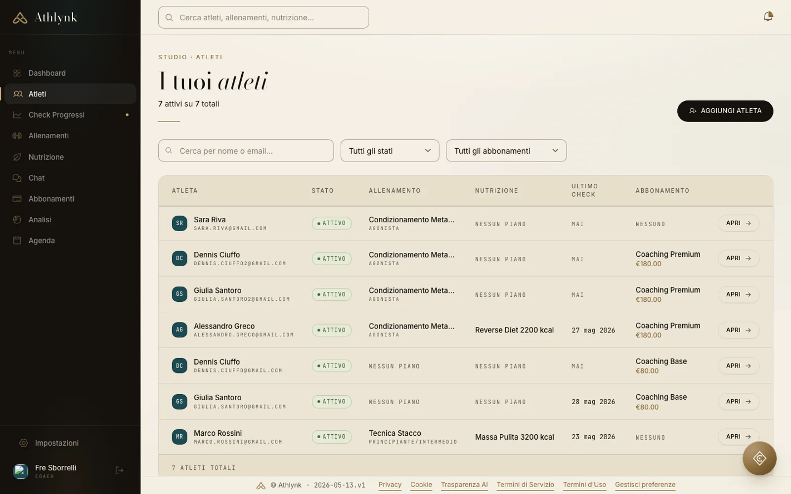
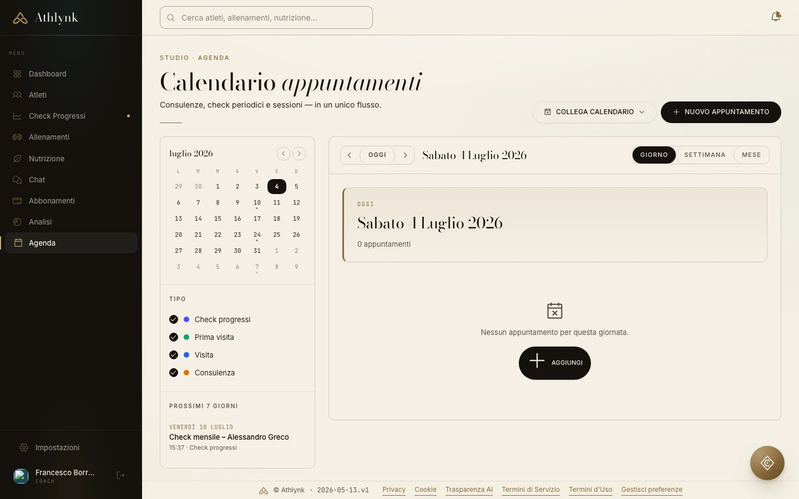

La piattaforma
Un gestionale,
non un'app.
La console con cui gestisci l'intero studio: atleti, schede, nutrizione, check, agenda, pagamenti e comunicazione. Quello che vedi qui sotto è il prodotto reale, non un rendering.





01 — Colpo d'occhio
Tutto lo studio,
a colpo d'occhio.
Atleti attivi, check in coda, piani in scadenza, appuntamenti di oggi. Apri la console e sai già cosa fare.
02 — Il roster
Ogni atleta,
una storia chiara.
Stato, allenamento in corso, piano alimentare, ultimo check e abbonamento — riga per riga, senza cercare.
03 — Il lavoro
Schede, diete, agenda:
un unico flusso.
Costruisci, assegni, monitori e fatturi dallo stesso posto. Il metodo resta tuo, la piattaforma lo amplifica.
Le funzionalità
Costruito sul lavoro
reale del coach.

Allenamento
Builder schede con
progressioni settimanali.
Componi la scheda dalla libreria esercizi, imposta serie, carichi, recuperi e RPE — anche per singola serie. La griglia di progressione regola ogni settimana del blocco.
- Libreria esercizi filtrabile per sport, muscolo e attrezzo
- Template riutilizzabili e cartelle per organizzare i blocchi
- Progressione per settimana con vista volume d'allenamento
- Assegnazione a più atleti in un passaggio
Nutrizione
Piani alimentari
al grammo.
Database alimenti con valori nutrizionali completi, pasti componibili, sostituzioni e protocolli di integrazione. I macro si calcolano da soli, tu decidi la strategia.
- Oltre 1.200 alimenti con micro e macronutrienti
- Piani per giorno o per settimana, a cibi o a macro
- Sostituzioni per pasto e stampa dieta per l'atleta
- Protocolli integratori assegnabili

Check & progressi
Nessun check
dimenticato.
Misure, foto e questionari entrano in coda automaticamente, con modelli personalizzabili per fase e obiettivo. I progressi diventano grafici che parlano da soli.
- Modelli check per peso, misure, feedback e nutrizione
- Coda di revisione con stati chiari e promemoria
- Grafici di peso, circonferenze e pliche per atleta
- Misurazioni singole per rilevazioni rapide

Business
I numeri dello studio,
senza fogli di calcolo.
Ricavi, rinnovi in scadenza, tasso di abbandono e clienti a rischio con il motivo spiegato. Abbonamenti e pagamenti degli atleti gestiti dentro la piattaforma.
- KPI di business aggiornati ogni giorno
- Rischio abbandono per cliente con spiegazione
- Piani di abbonamento e scadenze automatiche
- Agenda con check periodici e consulenze
L'assistente AI
Chiron risponde.
Tu decidi.
Nella schermata qui accanto Chiron sta rispondendo davvero a un coach: domanda reale, risposta in streaming, dati dello studio come contesto. Ricalibrazioni, revisioni check e messaggi agli atleti si confermano con un tocco.
- 01
Conosce i tuoi atleti
Schede, diete, check e storico: le risposte partono dai dati reali, non dalla media di internet.
- 02
Esegue, con il tuo ok
Bozza il messaggio, apre il check, prepara la revisione. Ogni azione passa dalla tua conferma.
- 03
Sempre nel flusso
Vive in ogni pagina della console e nell'app coach: lo chiami dove stai già lavorando.

Provala sul tuo studio
Dalla prima scheda
al primo rinnovo.
Web app inclusa in ogni piano · App iOS per coach e atleti